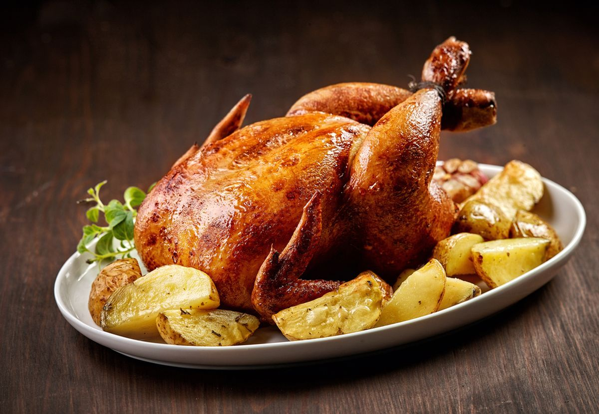

🍗 Frango Assado com Batatas

Uma receita simples e saborosa para um almoço especial com a família.
Ver ingredientes e modo de fazer
Ingredientes
- 1 kg de frango
- 5 batatas
- 3 dentes de alho
- Sal a gosto
- 1 colher de azeite
Modo de fazer
- Tempere o frango com alho, sal e outros temperos de sua preferência.
- Descasque e corte as batatas em pedaços.
- Coloque o frango e as batatas em uma assadeira.
- Regue tudo com azeite.
- Leve ao forno preaquecido a 200 °C.
- Asse por aproximadamente 1 hora ou até o frango ficar dourado.